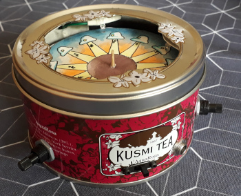
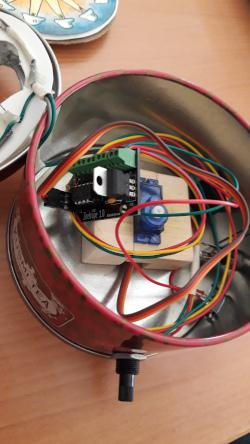

2021-12-28 00:15
A tiny phenakistiscope
The phenakistiscope is a rotating disk that produces short animations. It was invented in the 19th century, and the disks from that time are really beautiful. The animations they create are intriguing. In this series we look at a few of the ideas that result in these captivating works of art.
A different kind of charm
I know. The XIX century animations are charming. Seeing the rotating disks through their slits, in front of a mirror, would transport you to another world, another ambiance of high hats, beautiful dresses, spectacles… a refined atmosphere. And I am about to break all this by talking about servo-motors, LEDs and micro-controllers.
But bear with me. We are talking about a little ATtiny85 micro-controller. Only 8 terminals in a sweet thru-hole package. This tiny fellow can use a continuous-rotation servo-motor, some potentiometers, and a bunch of LEDs to replace the slits and the mirror. And the best part, it will let you see the animations at the same time as your kids.
The idea is simple: The servo-motor spins the disk while the LEDs blink. The disk will advance a certain angle between two LED flashes. If this angle coincides with the design of the disk, the animation will come to life!
And this is where the two potentiometers come in: One of them will let you change the speed of the servo-motor. The other potentiometer will change the time between the flashes of the LEDs.
A brief description of the program and the circuit
The ATtiny85 is a nice piece of micro-controller. The program configures a timer to produce the PWM signal for the servo-motor, another timer for the LEDs, and the ADC to read the two potentiometers. Then, it uses the readings of the potentiometers to change the limits of the timers. And that’s it!
You can see the listing of the program below. It has more comments than code because the actual code is… cryptic. You should check the datasheet to make sense of it. It is almost pure configuration. The only logic is there to copy the potentiometer readings to the timers.
phenakistiscope_attiny.c (Source)
/* ----------------------------------------------- Program that controls the period of a PWM signal with a potentiometer, while it moves a servo motor at a constant speed. It uses timer 0, 1, and the ADC Works with ATTiny85 ----------------------------------------------- */ #include <avr/io.h> #include <avr/interrupt.h> #include <util/delay.h> #define LED PB1 #define SERVO PB4 #define POT1 ADC1 #define POT2 ADC3 const uint8_t bright_time = 3; uint8_t read_adc(uint8_t channel) { ADMUX &= (0xF0); // Clear the channel selection ADMUX |= channel; // Read from ADCX ADCSRA |= (1 << ADSC); // Start conversion loop_until_bit_is_clear(ADCSRA, ADSC); return ADCH; } int main(void) { // Set LED and SERVO pins for output DDRB = (1 << SERVO) | (1 << LED); // Initialize the ADC -- Use VCC as reference ADMUX = 0; // Clear REFS0-2 select VCC as ref ADMUX |= (1 << ADLAR); // Use the most significant 8 bits ADCSRA |= (1 << ADPS1) | (1 << ADPS0); // Set prescaler to 1/8 ADCSRA |= (1 << ADEN); // Enable ADC // This is the timer for the LEDs // Configure timer 0 in fast PWM mode with variable period // The period is modified by chaning OCR0A, and the signal // turns off on OCR0B // So, output is at OC0B, PB1 TCCR0A = (1 << WGM01) | (1 << WGM00); // Fast PWM mode reseting at OCR0A TCCR0B = (1 << WGM02); // (mode 7) TCCR0A |= (1 << COM0B1); // Non-inverting output on OC0B (PB1) TCCR0B |= (1 << CS02) | (1 << CS00); // Set the prescaler to 1/1024 OCR0B = bright_time; // Time to keep the output high // And this is for the servo motor // Configure timer 1 in PWM mode. Output is PB4 (OC1B) // The ON period should last between 900 and 2100 us --> 1200 us // And the frequency of the signal should be between 50 and 100 Hz // Because it is an 8-bit timer, its period is divided by 256, maximum // A prescaler of 64 will give a period of 16.4 ms with a resolution of // 64 us // The 1200 us can be divided into only 18.75 bins... GTCCR = (1 << PWM1B); // Enable PWM mode on OCR1A GTCCR |= (1 << COM1B1); // OC1A turns on at 0, resets at OCR1C TCCR1 = (1 << CS12) | (1 << CS11) | (1 << CS10); OCR1C = 0xFF; // Pulse duration of 256 * 64 us, or 16.38 ms // ------ Event loop ------ // while (1) { // Read the 1st potentiometer and change the period of the PWM // signal for the LED in timer 0 OCR0A = read_adc(1); // Read the 2nd potentiometer and change the high duration of the PWM // signal for the servo motor in timer 1 // The 0-255 signal should be mapped to 0-18.75 // The minimum pulse is 900 us, or 14 clock ticks of 64 us uint8_t speed_servo = read_adc(3); OCR1B = (uint8_t)(18.75 * speed_servo / 255.0 + 14.06); } return 0; }
In terms of the circuit, the micro-controller doesn’t require much. The circuit has just a voltage regulator, and terminals for the potentiometers, servo-motor, and LEDs. Only one pin is used for the LEDs. I should have put a transistor instead.
I put everything in a repository, in GitHub. It includes the KiCAD files and the code for the micro-controller.
My own animated disk!
And this is my first animated disk. The pleasure to see it animated is unbelievable. It lacks the charm of the XIX century but has a reminiscence of aliens and cows.

And here it is, the real thing:
About this series
This is the fifth and last article about the phenakistiscope. In this short series, I describe some of the ideas used to animate the disks. The first article is here.